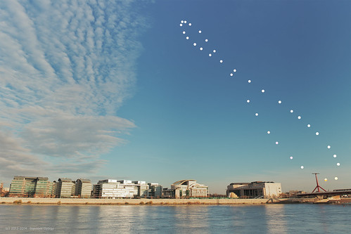

『数学ガールの秘密ノート/丸い三角関数』を読む【再掲載】

（この記事は8年ほど前に書いた記事を再構成して再掲載したものです。8年前の内容という点を考慮していただけるとありがたいです。いや Twitter で「三角関数」が流行ってると聞いたので乗っておかないとw）
やぁ来た来た。 来ましたよ。 そもそも「丸い三角関数」なんてタイトルが面白くないわけがない。 おぢさん，最初からクライマックスですョ。 どのくらい面白かったかというと，読んでる途中でポリアの『いかにして問題をとくか』を Amazon に発注してしまうくらい面白かった（そういえば自前では持ってなかった）。
今回はユーリちゃんのターンだね。 テトラちゃんは今回は自信喪失気味な感じだったし，ミルカさんは明らかに出番が少ない！ まぁミルカさんをメインにしたら回転行列の話から一気に群論まで行きそうな感じだけど（笑）
なんでユーリちゃんかというと，私が三角関数を覚えたのがやっぱり中学生の頃だったから。 今回のユーリちゃんを見てると自分の子供時代を思い出して，なんか懐かしくなってしまうんだよなぁ。 ちなみに学校の授業でいつ三角関数を習ったのかは覚えてない。 少なくとも学校の授業よりは早く習得してたのは確か。 今の学校教育って，いつ三角関数を習うの？ 中学？ 高校？ まぁピタゴラスの定理を習ったら三角関数なんてすぐだよね。 ってことはやっぱり中学かな？
なんで（授業よりも早く）三角関数を覚えたかったかというと，三角関数は物理，とりわけ天文学には必須の道具だったから（あとは微分方程式ね）。
三角関数は空間をイメージしながら考えると楽に理解できる。 理解できると三角関数はとても楽しい。 私の場合は逆で，最初に天球上の星々のイメージがあって，そこから三角関数を学んだのでとても楽に覚えられた。
たとえば第2章にリサージュ図形の話が出ている（ユーリちゃん回）。 作中ではオシロスコープの例が出てたけど，私達天文ファンはもっと身近なものを知っている。 それは天球上を移動する太陽や月や惑星たちだ。

これは一定の期間ごとに1年間かけて，同じ時刻，同じ場所，同じ方向にカメラを設置し太陽を重ね撮りで撮影したもの。 これをアナレンマ（Analemma）という。 リサージュ図形と似てるよね。 でもちょっと形が歪。 それは地球の自転軸が公転面に対して傾いていることと地球の公転軌道が円ではないことを示しているからだ1。

つまりアナレンマは太陽の周りを回る地球の写像と言える。 三角関数を学べばこういう図形も比較的容易に理解できるようになる。 ねっ，面白いでしょ。
そういえば第4章（これもユーリちゃん回）で「円周率を数える」実験をしているわけだけど，その中の問題4-1は，小学生の時にやったことがあるんだよね。 いわゆる「夏休みの自由研究」のネタに困って苦し紛れにやったやつだ。 当時はまだ筆算の割り算を覚えたてで，一生懸命計算したっけ（私は今だに「計算」が苦手である）。 今思い出せば「3.141」くらいまでは合ってたような気がするけどその先はグダグダだった。 まぁまだ誤差論も知らない小僧のやることだからね。 それでもそれを「自由研究」として受理してくれた当時の担任には感謝である。
今回，特に感じたのは「僕」やミルカさんたちの背後にある「眼差し」だ。 それは他の「数学ガール」シリーズでも時々感じるものだけど，今回特にそれを感じたのは，子供時代の私がユーリちゃんに感情移入し，それを今の私が「見てる」からだと分かった。 私には子どもはいないけど，もし子どもがいたらきっと学校の授業参観でそういう目で子どもを見るんだろうなぁ，と思ったり。
ブックマーク
参考図書

- 数学ガールの秘密ノート／丸い三角関数
- 結城 浩 (著)
- SBクリエイティブ 2014-04-23 (Release 2015-04-18)
- Kindle版
- B00W6NCLJM (ASIN)
- 評価
丸と三角の楽しい関係。頑張れば小学生高学年でも大丈夫。

- 数学ガールの秘密ノート／ベクトルの真実
- 結城 浩 (著)
- SBクリエイティブ 2015-11-17 (Release 2015-12-03)
- Kindle版
- B018VE46YW (ASIN)
- 評価
図形（具象）と数式（抽象）の往復は楽しい。

- 数学ガールの秘密ノート／行列が描くもの
- 結城 浩 (著)
- SBクリエイティブ 2018-10-16 (Release 2018-10-17)
- Kindle版
- B07JB2MSQT (ASIN)
- 評価
三角関数，ベクトルときたら次は行列だよね。リサちゃん大活躍で嬉しい。

- いかにして問題をとくか
- G．ポリア (著), 柿内賢信 (翻訳)
- 丸善出版 2022-03-25 (Release 2022-02-24)
- Kindle版
- B09T94D62K (ASIN)
- 評価
なんと！ Kindle 版が出た。ただしプリント・レプリカ形式なので見れる環境が限られる。残念ながら Kindle Cloud Reader では見れなかった。紙の本を持ってる人が念の為に買っておくのがいいかな（笑）

- 天体の位置計算
- 長沢 工 (著)
- 地人書館 1985-09-01
- 単行本
- 4805202254 (ASIN), 9784805202258 (EAN), 4805202254 (ISBN)
- 評価
B1950.0 分点から J2000.0 分点への過渡期に書かれた本なので情報が古いものもあるが，基本的な内容は位置天文学の教科書として充分通用する。

- 天体物理学
- Arnab Rai Choudhuri (著), 森 正樹 (翻訳)
- 森北出版 2019-05-28
- 単行本
- 4627275110 (ASIN), 9784627275119 (EAN), 4627275110 (ISBN)
- 評価
興味本位で買うにはちょっとビビる値段なので図書館で借りて読んでいたが，やっぱり手元に置いておきたいのでエイヤで買った。まえがきによると，この手のタイプの教科書はあまりないらしい。内容は非常に堅実で分かりやすい。理系の学部生レベルなら問題なく読めるかな。
-
もう少しヒントを言うと，黄道面に対して最大角度となる夏至・冬至と公転起動の遠日点・近日点は異なる，ということも考慮に入れるといいだろう。アナレンマは元々占星術の用語で日時計のメモリを指すものだったらしい。 ↩︎